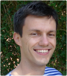

Simon Šuster

Computational Linguistics & Psycholinguistics Research Center,
University of Antwerp
Mailing: Prinsstraat 13 (L), 2000 Antwerp, Belgium
Office: Room S.L.201, Lange Winkelstraat 40
+32 3 265 5220
simon.suster@nulluantwerpen.be
@SimonSuster
I'm a postdoc researcher at the
Computational Linguistics & Psycholinguistics Research Center of the University of Antwerp, working on clinical NLP in the
Accumulate project. I'm also affiliated to the Antwerp University Hospital.
I obtained my doctoral degree from the University of Groningen, where I worked with
Gertjan van Noord. During my PhD years, I've also collaborated closely with
Ivan Titov. Previously, I was a master student at the University of Groningen and the Université de Lorraine, involved in the
EMLCT program. I obtained my university degree in
translation studies from the University of Ljubljana, Slovenia.
- Empirical studies on word representations. [bibtex]
Simon Šuster. PhD thesis, 2016.
- Using Distributed Representations to Disambiguate Biomedical and Clinical Concepts. [bibtex | code]
Stéphan Tulkens, Simon Šuster and Walter Daelemans. BioNLP, 2016.
- Bilingual Learning of Multi-sense Embeddings with Discrete Autoencoders. [bibtex | slides | code | video]
Simon Šuster, Ivan Titov and Gertjan van Noord. NAACL, 2016.
- Word Representations, Tree Models and Syntactic Functions. [bibtex | code ]
Simon Šuster, Gertjan van Noord and Ivan Titov. arXiv preprint arXiv:1508.07709, 2015.
- GLAD: Groningen Lightweight Authorship Detection. [bibtex | code]
Manuela Hürlimann, Benno Weck, Esther van den Berg, Simon Šuster and Malvina Nissim. Uncovering Plagiarism, Autorship and Social Software Misuse, CLEF, Author Identification challenge, 2015.
- From neighborhood to parenthood: the advantages of dependency representation over bigrams in Brown clustering. [bibtex | slides | code | data]
Simon Šuster and Gertjan van Noord. COLING, 2014.
- Semantic Mapping for Lexical Sparseness Reduction in Parsing. [bibtex]
Simon Šuster and Gertjan van Noord. ESSLLI Extrinsic Parse Improvement Workshop, 2013.
- Resolving PP-attachment ambiguity in French with distributional methods. [bibtex]
Simon Šuster. Master thesis, 2012.
- An investigation into language complexity of World-of-Warcraft game-external texts. [bibtex]
Simon Šuster. arXiv preprint arXiv:1502.02655, 2015.
- →Publications in Slovene
- The challenges in concept detection for clinical texts. Simon Šuster. Accumulate industrial meeting, 2016
- Towards clinical language understanding. Simon Šuster, Stéphan Tulkens and Walter Daelemans. ATILA, 2016
- Clinical language processing: the first steps Simon Šuster. Annual meeting of CLiPS, 2016
- Inducing multi-sense word representations multilingually. Simon Šuster, Ivan Titov and Gertjan van Noord. ATILA and CLIN, 2015
- Who's the bad guy? OlympIKade: Informatiekunde Matchingsdag, 2015
- Presentation of E. Bender's (2011) On Achieving and Evaluating Language-Independence in NLP. RUG Computational Linguistics reading group, 2015
- Overview of Learning From Data’s Final Project: Author Verification. Malvina Nissim and Simon Šuster. RUG Computational Linguistics reading group, 2015
- Tree models, syntactic functions and word representations. Simon Šuster, Gertjan van Noord and Ivan Titov. The 25th meeting of Computational Linguistics in the Netherlands (CLIN), 2015
- From perceptrons to word embeddings (a high-level introduction). RUG Computational Linguistics reading group, 2014
- Extending Hidden Markov (tree) models for word representations. (poster) Simon Šuster and Gertjan van Noord. 23rd annual Belgian-Dutch Conference on Machine Learning (BENELEARN), 2014. [abstract]
- How to write a master's thesis: a computational linguist's view. RUG Research Master's in Linguistics meeting, April 2014, March 2015
- Dependency-tuned word clusters for Dutch. Simon Šuster and Gertjan van Noord. The 24th meeting of Computational Linguistics in the Netherlands (CLIN), 2014
- Reading group presentation on Reddy et al. 2011 paper on Dynamic and Static Prototypes For Semantic Composition. RUG Computational Linguistics reading group, 2013
- Semantic Mapping for Lexical Sparseness Reduction in Parsing. Simon Šuster and Gertjan van Noord. ESSLLI Extrinsic Parse Improvement Workshop, 2013
- The Brown et al. 1992 Clustering. RUG Computational Linguistics reading group, 2013
- Semantic Mapping for Lexical Sparseness Reduction in Parsing. Simon Šuster and Gertjan van Noord. New Frontiers in Parsing and Generation Workshop, 2013
- Lexical Association Analysis For Semantic-Class Feature Enhancement In Parsing. (poster) Simon Šuster and Gertjan van Noord. 23rd meeting of Computational Linguistics in the Netherlands (CLIN), 2013
- Resolving PP-attachment ambiguity by distributional semantic modeling in the context of parsing of French. RUG Computational Linguistics reading group, 2012
- The SSJ corpus in the context of Slovene reference corpora. Simon Šuster and Olga Yeroshina Pobirk. 7th International Conference Practical Applications in Language and Computers, 2009
- →Talks in Slovene
- Learning from data, 2014/2015. With dr. Malvina Nissim
-final project: Authorship verification
- Learning from data, 2013/2014. With prof. dr. Gertjan van Noord
-week 2: Introduction to Weka, The Perceptron
-week 4: K-means
-week 5: Brown Clustering
-week 6: Linear Regression
-final project: Movie revenue prediction from reviews
- Corpustaalkunde (Corpus linguistics), 2013. Assisting dr. Gosse Bouma
- Corpustaalkunde (Corpus linguistics), 2011. Assisting dr. Gosse Bouma